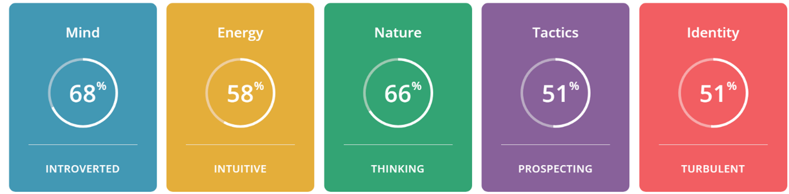

Personal Information
I was born in Australia and live in Canberra. I have 2 children, one studying at university and one in college. We have a dog named Piccolo, she is a Bichoodle.
I have an Associate Diploma in Information Technology which I completed after I finished secondary school. I went on to become a programmer for over 10 years mostly in mainframe systems. After my children were born, I stopped working in the industry however my husband set up an IT company which specialized in mobility and security, as the company has grown, we have expanded to now employ approximately 40 people.
I love hiking with my partner and prior to Covid-19 used to travel as much as possible. Apart from lots of other countries I’ve been to Jordan seven times as this is where my husband was born. I play tennis weekly, play the piano, love gardening, cooking and spending time with friends and family. I am turning 50 this year which is a huge milestone and am looking forward to a big party surrounded by all my loved ones in a few weeks.
Interest in IT
After completing secondary school, I was to study Physics at University however decided to take a gap year first and get a job in the government to have a break from studying. I sat an entry test and apparently did quite well so I was asked if I would be interested in studying IT as part of a cadetship. I had no experience in IT however I decided to take the opportunity and found programming to be quite a natural fit for me, so I completed an Associate Diploma. I was then offered a permanent job and I worked as a programmer for the Federal Government and Fujitsu for over 10 years.
My experience as a programmer started out in a major redevelopment of an old COBOL system which allowed me the opportunity to be involved in the full System Development Life Cycle. We did everything from interviewing clients for functional requirements to designing the data structures and interfaces. We built the system in a language called ObjectStart which is a mainframe language with some object-oriented principles allowing the code to be reused. We completed the testing process and released the new system into production.
After a couple of years of maintenance on this system I moved on to work in a team to develop a new system in Cold Fusion and JavaScript which enabled me to learn a new language and skills.
I took a year off after my son was born and was offered a contract to write up all the business rules for a large part of the ObjectStar system I had worked on as it had changed so many times over the years with changes to legislation and the system had become very difficult to maintain. My job was to basically reverse engineer the system by reading through the code and extracting the business rules from what the code was doing. These documents were used by Fujitsu to help design a new system which would be easier to maintain.
After a 17 year gap, not working in the industry I have decided to re-train and get back into the workforce. I thought of working in another industry however IT seemed like an obvious choice to continue my career. I decided to complete a unit online through Open Universities Australia to see if it still interested me. RMIT looked appealing as the IT degree it offers has a great reputation from the research I did online. I initially only wanted to complete programming units to update my skills however I have now completed 3 units - Introduction to Programming, Programming 1 and Systems Engineering and it has piqued my interest in other areas too. I am thoroughly enjoying my studies and have chosen to complete the degree.
I am hoping that through the degree and updating my skills it will also reveal to me which part of the industry most appeals to me. I like programming however I am also interested in business analysis, data analysis and data science.
Ideal Job
After completing secondary school, I was to study Physics at University however decided to take a gap year first and get a job in the government to have a break from studying. I sat an entry test and apparently did quite well so I was asked if I would be interested in studying IT as part of a cadetship. I had no experience in IT however I decided to take the opportunity and found programming to be quite a natural fit for me, so I completed an Associate Diploma. I was then offered a permanent job and I worked as a programmer for the Federal Government and Fujitsu for over 10 years.
My experience as a programmer started out in a major redevelopment of an old COBOL system which allowed me the opportunity to be involved in the full System Development Life Cycle. We did everything from interviewing clients for functional requirements to designing the data structures and interfaces. We built the system in a language called ObjectStart which is a mainframe language with some object-oriented principles allowing the code to be reused. We completed the testing process and released the new system into production.
After a couple of years of maintenance on this system I moved on to work in a team to develop a new system in Cold Fusion and JavaScript which enabled me to learn a new language and skills.
I took a year off after my son was born and was offered a contract to write up all the business rules for a large part of the ObjectStar system I had worked on as it had changed so many times over the years with changes to legislation and the system had become very difficult to maintain. My job was to basically reverse engineer the system by reading through the code and extracting the business rules from what the code was doing. These documents were used by Fujitsu to help design a new system which would be easier to maintain.
After a 17 year gap, not working in the industry I have decided to re-train and get back into the workforce. I thought of working in another industry however IT seemed like an obvious choice to continue my career. I decided to complete a unit online through Open Universities Australia to see if it still interested me. RMIT looked appealing as the IT degree it offers has a great reputation from the research I did online. I initially only wanted to complete programming units to update my skills however I have now completed 3 units - Introduction to Programming, Programming 1 and Systems Engineering and it has piqued my interest in other areas too. I am thoroughly enjoying my studies and have chosen to complete the degree. I am hoping that through the degree and updating my skills it will also reveal to me which part of the industry most appeals to me. I like programming however I am also interested in business analysis, data analysis and data science.
Link: Data Scientist

Position:
This job is something that really interests me because I think Data Science is a growth area in the industry and it really fascinates me. I like looking for patterns in information and fine tuning and analysing data. Everything we do can be broken down into data and we already have so much of our data out in the world which can be accessed, analysed and used to drive our lives from automating services we use to being subjected to tailored marketing.
Skills required:
From the research I have conducted a data scientist needs to be competent in the following areas.
- Critical thinking and analytical skills
- Effective communication ie. The ability to convey what insight into data mean to a business
- Problem solving, identify issues and solutions in data
- Curiosity to look for patterns and areas for improvement in an organization
- Technical ability in programming languages such as Python and SQL
- Technical ability in using data science visualization tools
- Statistical skills
My current skills, qualifications and experience:
I have 10 years’ experience working as an analyst programmer. I have an Associate Diploma in IT which I obtained many years ago. Recently I completed 2 programming units and 1 software engineering unit in the Bachelor of Information Technology Degree at RMIT.
My plan to obtain the necessary skills, qualifications and experience for this job:
To work in the data science field, I would need to complete further tertiary education. RMIT offers a Bachelor of Data Science however this is not offered online, and I live in Canberra.
Other universities offer Graduate Diplomas in Data Science so this could be an option however I want to work in the industry in the next few years.
I will continue with the Bachelor of Information Technology and choose electives which are related to the area of data science such as statistics and look for work opportunities which overlap with my growing skill set and data science and then could learn some skills in the work environment.
There are also online courses available to teach the technical software skills necessary such as Python, Jupyter and GitHub.
Personal Profile
Myers-Briggs Test


Strengths:
- Analytical
- Original
- Open-minded
- Curious
- Objective
Weaknesses:
- Disconnected
- Insensitive
- Dissatisfied
- Impatient
- Perfectionistic
Learning Style Test

Big Five Personality Test

Results:
I have a clear understanding of my traits. I have always been an analytical person which is quite typical for people working in IT.
I am also an introvert which is also quite common, I think a lot of programmers are similar.
I am obviously conscientious as indicated by the Big Five test and I’m not a confrontational person.
I probably tend to be more of a worker than a leader. I have led teams in the past however I do this by consultation rather than by being an overpowering person. I have always preferred to work on my own than in teams generally however I am finding that with this course collaborating with others is very useful because there is a steep learning curve and I can pick things up from others too.
I think I should look for team member that don’t have all the same personality traits as I do. It would be good to have a combination of personalities. If there is no one that is an obvious leader the project can stagnate.
Project Idea
Please click here to check out my project idea